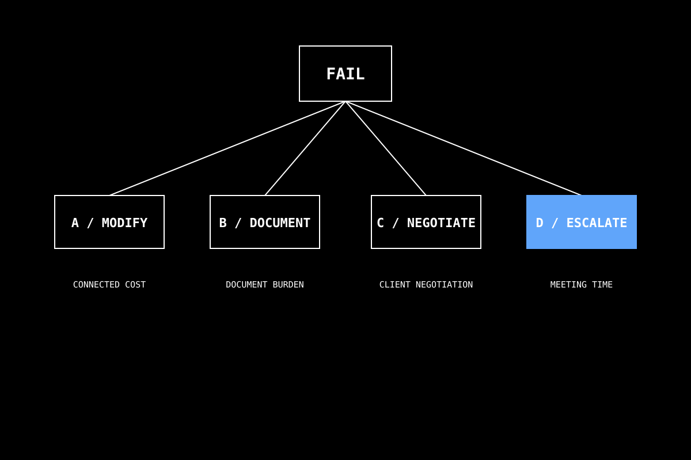

MCP 回 PASS / FAIL 就好。FAIL 不是死刑——它是四條路線的決策起點。本頁定義 A/B/C/D 框架，套到採光 / 排煙兩個典型 FAIL 場景，並從本場日本 sample 模型 demo 跑出的實際 FAIL 案例庫出發。
MCP 是 執行器，回答「達標／不達標」。設計師是決策者，回答「能接受嗎？怎麼修？」。把這兩種模式混淆是大多數「AI 取代設計師」恐慌的源頭。
把 MCP 的 0/1 結果硬塞「決策建議」（如「我建議您改成 1.2 m」）= 越界。設計師收到 FAIL 後，自己選 A/B/C/D 路線。MCP 只負責清楚說「未達 X 標準，差 Y 數值」。剩下交給人。
不管是採光、消防、容積還是停車，FAIL 之後的決策都收斂到同一組四選一。框架是 A 改設計 / B 接受現狀 / C 改定義 / D 跳出 AI 找人。

居室採光面積比 ≥ 1/8（≈ 12.5%）。某居室實測 9.5%，FAIL。同一個 FAIL，四條路線。
某居室開口距天花 < 80 cm 的有效面積不足，FAIL。同一個 A/B/C/D 框架，套上去動作完全一致——這就是框架的普適性。
採光與排煙是兩個完全不同的法規條文，但 FAIL 之後的決策路線結構一致。這意味框架可以推廣到：容積率 FAIL、停車位數 FAIL、走廊寬度 FAIL、樓梯淨高 FAIL⋯⋯所有 MCP 給的 0/1 結果，都用同一個 A/B/C/D 收斂。
5/18 demo 用 サンプル住宅集合.rvt 跑出的真實 FAIL，作為框架的活體範例。不是教科書例題——是實際模型跑出來的。
1F 店舗 26 經 check_smoke_exhaust_windows 跑出：「有效開口面積不足，FAIL」。套 A/B/C/D：
| 路線 | 具體做法 | 業主／法規 / 美學阻力 |
|---|---|---|
| A | 店舗面外的玻璃櫥窗改一部分為排煙開放窗 | 會打斷店舗店面節奏，業主可能反對 |
| A' | 裝機械排煙 | 店舗預算不一定接受長期電費 |
| C | 把該空間改成「事務空間（非營業）」？ | 業主用途不允 |
| D | 找消防顧問與業主三方評估 | 建議走 D，因 A/A'/C 都有明顯阻力 |
get_room_daylight_info 顯示駐車場 27 採光比僅 4.5%。但這裡有個關鍵釐清——駐車場本來就不適用居室採光要求。實況：tool 的 raw data 是對的，但第二憲法 Domain Method Compliance要求查 domain SOP 確認房間是否需檢核。
有時 FAIL 是檢核被誤用（用居室標準檢核非居室）。第二憲法要求先過 domain SOP 確認「該不該檢」——這比 A/B/C/D 早一步。框架的應用順序是：
1️⃣ 第一憲法 — 設計師問了才檢
2️⃣ 第二憲法 — 用對 domain SOP 檢
3️⃣ A/B/C/D — 真的 FAIL 才開始選路線